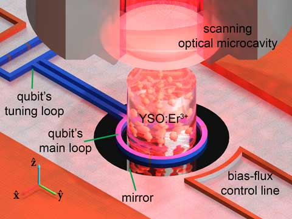

My name is Herianto Lim. I was awarded an awesome balloon in 2017. Unfortunately, the balloon then deflated. Things don't last, do they? I believe realizing that is the secret to happiness. Anyway, I am still writing this website at sloth speed. Below are summaries of some of the projects I did in my life. You can find out more about me on other websites (links at the top). Thanks for visiting.
Quantum frequency conversion with flux qon
Apr 2015 — Jun 2018

Flux qon is a term introduced to refer to a combination of a superconducting flux qubit and an ensemble of ions. The hypothetical flux-qon system depicted in the above figure on the right was investigated in my PhD research. The flux qubit is shown by the blue loop, and the ensemble of ions consists of erbium (Er3+) ions hosted in a cylindrical yttrium orthosilicate (Y2SiO5, or simply YSO). The flux qubit operates within the microwave spectrum with a frequency in the order of a few GHz. The YSO:Er3+ operates at the fiber-optic frequency (around 195 THz). The interaction between the two is hoped to provide a way to convert quantum signals from a microwave frequency to the fiber-optic frequency and vice versa.
Quantum frequency converters are expected to play an essential role in future quantum network where multiple quantum computers across different geographical locations are connected over quantum communication channels.[1,2] The communication channels are expected to be implemented over fiber-optic media due to the minimal transmission losses they present. Although it may be possible for all components in a quantum network to operate on a single optical frequency, it is more likely that future quantum network utilizes many different quantum technologies leveraging on the unique advantages of each technology. With a hybrid system, there would be differences in the operating frequencies, hence a quantum frequency converter would be needed.
As of 2019, atomic and superconducting quantum systems excel in quantum gate operations and quantum entanglement compared to optical quantum systems. A hybrid combination of atomic and superconducting quantum systems is likely to be the system of choice for future quantum computing, and optical quantum systems are likely to be the channels of choice for future quantum communication. Unfortunately, the two sets of systems operate at vastly different frequencies. The former operates in MHz to GHz band, while the latter operates in THz band. Realizing efficient quantum frequency conversion over a large frequency difference is a non-trivial task.[3] The possibility of achieving quantum frequency conversion using a flux qon was investigated theoretically in my PhD work. No conclusion was reached of whether it is possible or not, but the work laid down a useful framework for future research.
^ J. S. Pelc, L. Yu, K. De Greve, P. L. McMahon, C. M. Natarajan, V. Esfandyarpour, S. Maier, C. Schneider, M. Kamp, S. Höfling, R. H. Hadfield, A. Forchel, Y. Yamamoto, and M. M. Fejer, Opt. Express 20, 275107-27519 (2012).
Vanadium dioxide (VO2) is a transition metal oxide capable of structural switching in picosecond (10-12 s) timescale. The ultrafast switching that encompasses a drastic change in the electrical and optical properties of the material can be triggered with pulsed 800 nm light.[1] In the M1 (monoclinic, relaxed) phase, VO2 is transparent to infrared light; whilst in the R (rutile, excited) phase, it is reflective to infrared light.[2] The structure of VO2 in each phase is shown in the above figure on the right, with the gray balls representing the vanadium atoms and the red balls representing the oxygen atoms.
With the infrared switching, fiber-optic signals (1550 nm) passing through a VO2 material can be passed or significantly attenuated on demand, allowing the use of VO2 as an optical switch in fiber-optic systems.[3] By doping VO2 with erbium (Er3+), the material could also be used for fiber-optic signal amplification through the luminescence of Er3+ in the fiber-optic band. The integrated approach could allow for optical modulation with minimal device footprint and latency for on-chip as well as synchronous applications.
This project examined the structural and optical characteristics of VO2:Er throughout the switching transition. It was deduced by symmetry considerations that VO2 could host optically active Er3+ ions and that a stable Er substitution would take place at the two V atomic sites positioned in the middle of the monoclinic unit cell. Er3+ photoluminescence was demonstrated in VO2 samples implanted with Er, supporting the idea that VO2:Er could be used for fiber-optic signal amplification. However, the switching qualities of VO2:Er were observed to deteriorate with increasing concentration of Er3+ dopants. It was concluded that although Er-implanted VO2 could probably work as a combined optical switch and amplifier, the poorer switching qualities do not guarantee that a device based on the material could provide better utility than a separated system of optical switches and Er amplifiers. Analysis of the efficacy of the material in a device setup was left for future research.